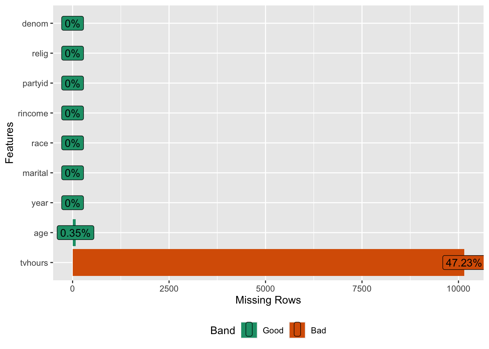
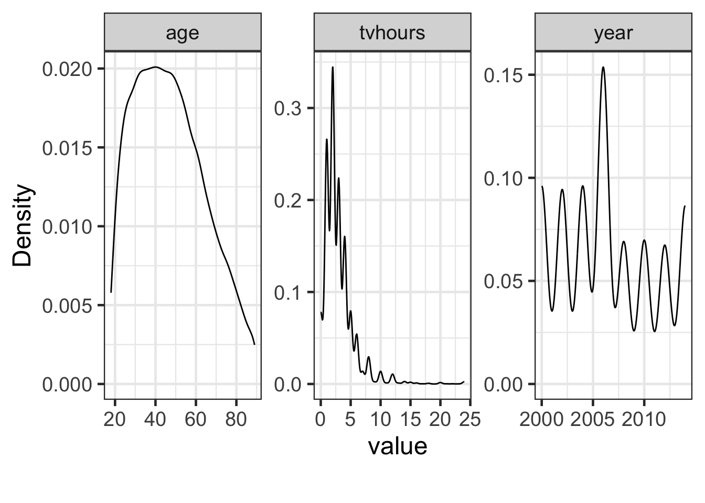

# A tibble: 6 × 9
year marital age race rincome partyid relig denom tvhours
<int> <fct> <int> <fct> <fct> <fct> <fct> <fct> <int>
1 2000 Never married 26 White $8000 to 9999 Ind,near rep Protest… Sout… 12
2 2000 Divorced 48 White $8000 to 9999 Not str republican Protest… Bapt… NA
3 2000 Widowed 67 White Not applicable Independent Protest… No d… 2
4 2000 Never married 39 White Not applicable Ind,near rep Orthodo… Not … 4
5 2000 Divorced 25 White Not applicable Not str democrat None Not … 1
6 2000 Married 25 White $20000 - 24999 Strong democrat Protest… Sout… NAEDA and feature engineering
BSMM8740-2-R-2025F [WEEK - 2]
L.L. Odette
Announcements
For this week (September 25 - 29), office hours will be on Friday, from 2:00pm - 4:00pm.
Regular Thursday office hours resume the week of October 02.
Today’s Outline
- Complete last week’s lab
- Review this week’s material
- Introduction to exploratory data analysis (EDA), and
- Feature engineering in the tidyverse
- Start (and finish?) this week’s lab
Note
The first two labs are designed to give you practice with the Tidyverse tools for manipulating data.
Exploratory Data Analysis (EDA)
Exploratory Data Analysis (EDA)
Exploratory data analysis is the process of understanding a new dataset by looking at the data, constructing graphs, tables, and models. We want to understand three aspects:
each individual variable by itself;
each individual variable in the context of other, relevant, variables; and
the data that are not there.
Exploratory Data Analysis (EDA)
During EDA we want to come to understand the issues and features of the dataset and how this may affect analysis decisions.
We are especially concerned about missing values and outliers.
Exploratory Data Analysis (EDA)
We are going to perform two broad categories of EDA:
- Descriptive Statistics, which includes mean, median, mode, inter-quartile range, and so on.
- Graphical Methods, which includes histogram, density estimation, box plots, and so on.
Exploratory Data Analysis (EDA)
Descriptive statistics and graphical methods support the following process:
Understand the distribution and properties of individual variables.
Understand relationships between variables.
Understand what is not there.
EDA: example
Our first dataset is a sample of categorical variables from the General Social Survey, a long-running US survey conducted by the independent research organization NORC at the University of Chicago.
EDA: example
Use dplyr::glimpse() to see every column in a data.frame
Rows: 10
Columns: 9
$ year <int> 2000, 2000, 2000, 2000, 2000, 2000, 2000, 2000, 2000, 2000
$ marital <fct> Never married, Divorced, Widowed, Never married, Divorced, Married, Neve…
$ age <int> 26, 48, 67, 39, 25, 25, 36, 44, 44, 47
$ race <fct> White, White, White, White, White, White, White, White, White, White
$ rincome <fct> $8000 to 9999, $8000 to 9999, Not applicable, Not applicable, Not applic…
$ partyid <fct> "Ind,near rep", "Not str republican", "Independent", "Ind,near rep", "No…
$ relig <fct> Protestant, Protestant, Protestant, Orthodox-christian, None, Protestant…
$ denom <fct> "Southern baptist", "Baptist-dk which", "No denomination", "Not applicab…
$ tvhours <int> 12, NA, 2, 4, 1, NA, 3, NA, 0, 3EDA: example
Use dplyr::slice_sample() to see a random selection of rows in a data.frame
# A tibble: 10 × 9
year marital age race rincome partyid relig denom tvhours
<int> <fct> <int> <fct> <fct> <fct> <fct> <fct> <int>
1 2006 Married 60 White Not applicable Strong republican Protes… Pres… NA
2 2000 Widowed 86 White Not applicable Strong democrat Protes… Othe… NA
3 2006 Married 32 White $25000 or more Not str republican None Not … 2
4 2000 Divorced 50 Black $25000 or more Strong democrat Protes… Sout… NA
5 2006 Married 61 White Lt $1000 Strong republican Protes… No d… 4
6 2002 Widowed 58 White $25000 or more Strong democrat None Not … NA
7 2000 Never married 34 White $25000 or more Independent Cathol… Not … 3
8 2010 Widowed 70 Other Not applicable Not str democrat Cathol… Not … 2
9 2002 Married 36 White $25000 or more Strong republican Cathol… Not … 2
10 2002 Married 55 White $6000 to 6999 Independent Protes… Other NAEDA: example
Most of the columns here are factors (categories). Use forcats::fct_count() to count the factor entries.
# A tibble: 16 × 2
f n
<fct> <int>
1 Protestant 10846
2 Catholic 5124
3 None 3523
4 Christian 689
5 Jewish 388
6 Other 224
7 Buddhism 147
8 Inter-nondenominational 109
9 Moslem/islam 104
10 Orthodox-christian 95
11 No answer 93
12 Hinduism 71
13 Other eastern 32
14 Native american 23
15 Don't know 15
16 Not applicable 0EDA: example
The base R function summary() can be used for key summary statistics of the data.
year marital age race
Min. :2000 No answer : 17 Min. :18.00 Other : 1959
1st Qu.:2002 Never married: 5416 1st Qu.:33.00 Black : 3129
Median :2006 Separated : 743 Median :46.00 White :16395
Mean :2007 Divorced : 3383 Mean :47.18 Not applicable: 0
3rd Qu.:2010 Widowed : 1807 3rd Qu.:59.00
Max. :2014 Married :10117 Max. :89.00
NA's :76
rincome partyid relig
$25000 or more:7363 Independent :4119 Protestant:10846
Not applicable:7043 Not str democrat :3690 Catholic : 5124
$20000 - 24999:1283 Strong democrat :3490 None : 3523
$10000 - 14999:1168 Not str republican:3032 Christian : 689
$15000 - 19999:1048 Ind,near dem :2499 Jewish : 388
Refused : 975 Strong republican :2314 Other : 224
(Other) :2603 (Other) :2339 (Other) : 689
denom tvhours
Not applicable :10072 Min. : 0.000
Other : 2534 1st Qu.: 1.000
No denomination : 1683 Median : 2.000
Southern baptist: 1536 Mean : 2.981
Baptist-dk which: 1457 3rd Qu.: 4.000
United methodist: 1067 Max. :24.000
(Other) : 3134 NA's :10146 EDA: packages for EDA
The function
skimr::skim()gives an enhanced version of base R’ssummary().Other packages, such as
DataExplorer::rely more on graphing.- We’ll look at a few of the
DataExplorer::functions next.
- We’ll look at a few of the
DataExplorer::introduce
The function DataExplorer::introduce produces a basic description of the data in a data.frame.
Rows: 1
Columns: 9
$ rows <int> 21483
$ columns <int> 9
$ discrete_columns <int> 6
$ continuous_columns <int> 3
$ all_missing_columns <int> 0
$ total_missing_values <int> 10222
$ complete_rows <int> 11299
$ total_observations <int> 193347
$ memory_usage <dbl> 784776DataExplorer::plot_intro
The function DataExplorer::plot_intro is a visual version of DataExplorer::introduce.

DataExplorer::plot_missing
The function DataExplorer::plot_missing shows information on missing data visually.

D_Explorer::profile_missing
Code
| num_missing | pct_missing | |
|---|---|---|
| year | 0 | 0.000000000 |
| marital | 0 | 0.000000000 |
| age | 76 | 0.003537681 |
| race | 0 | 0.000000000 |
| rincome | 0 | 0.000000000 |
| partyid | 0 | 0.000000000 |
| relig | 0 | 0.000000000 |
| denom | 0 | 0.000000000 |
| tvhours | 10146 | 0.472280408 |
DataExplorer::plot_density

D_Explorer::plot_histogram

DataExplorer::plot_bar

EDA: additional DataExplorer functions
When the data has more numerical values consider looking at the relationships with the following functions:
DataExplorer::plot_correlation()creates a correlation heatmap.
EDA: additional DataExplorer functions
When the data has more numerical values consider looking at the relationships with the following functions:
DataExplorer::plot_scatterplot()creates a scatterplot for all measurements.
EDA: additional DataExplorer functions
When the data has more numerical values consider looking at the relationships with the following functions:
DataExplorer::plot_qq()creates a quantile-quantile plot for each continuous feature.
Note
A Q–Q plot (quantile-quantile plot) is a probability plot, a graphical method for comparing two probability distributions by plotting their quantiles against each other.
EDA: classifying missing data
There are three main categories of missing data
- Missing Completely At Random (MCAR);
- missing but independent of other measurements
- Missing at Random (MAR);
- missing in a way related to other measurements
- Missing Not At Random (MNAR).
- missing as a property of the variable or some other unmeasured variable
EDA: handling missing data
We can think of a few options for dealing with missing data
Drop observations with missing data.
Impute the mean of observations without missing data.
Use multiple imputation.
Note
Multiple imputation involves generating several estimates for the missing values and then averaging the outcomes.
Example: MCAR or MAR?
Code
# A tibble: 10 × 4
partyid n.x n.y pct_na
<chr> <int> <int> <dbl>
1 No answer 154 9 0.0584
2 Don't know 1 0 0
3 Other party 393 3 0.00763
4 Strong republican 2314 8 0.00346
5 Not str republican 3032 8 0.00264
6 Ind,near rep 1791 2 0.00112
7 Independent 4119 18 0.00437
8 Ind,near dem 2499 2 0.000800
9 Not str democrat 3690 11 0.00298
10 Strong democrat 3490 15 0.00430 EDA: missing data
Finally, be aware that how missing data is encoded depends on the dataset
- R defaults to NA when reading data, in joins, etc.
- The creator(s) of the dataset may use a different encoding.
- Missing data can have multiple representations according to semantics of the measurement.
- Remember that entire measurements can be missing (i.e. from all observations, not just some).
EDA: summary
- Understand what the measurements represent and confirm constraints (if any) and suitability of encoding.
- Make a decision on how to deal with missing data.
- Understand shape of measurements (may identify an issue or suggest a data transformation)
EDA: bad data \(\rightarrow\) bad results

Feature engineering
Feature engineering is the act of converting raw observations into desired features using statistical, mathematical, or machine learning approaches.
Feature engineering: transformation
for continuous variables (usually the independent variables or covariates):
- normalization (scale values to \([0,1]\))
- \(X_\text{norm} = \frac{X-X_\text{min}}{X_\text{max}-X_\text{min}}\)
- standardization (subtract mean and scale by stdev)
- \(X_\text{std} = \frac{X-\mu_X}{\sigma_X}\)
- scaling (multiply / divide by a constant)
- \(X_\text{scaled} = K\times X\)
Feature engineering: transformation
Other common transformations:
- Box-cox: with \(\tilde{x}\) the geometric mean of the (positive) predictor data (\(\tilde{x}=\left(\prod_{i=1}^{n}x_{i}\right)^{1/n}\))
\[ x_i(\lambda) = \left\{ \begin{array}{cc} \frac{x_i^{\lambda}-1}{\lambda\tilde{x}^{\lambda-1}} & \lambda\ne 0\\ \tilde{x}\log x_i & \lambda=0 \end{array} \right . \]
Note
Box-cox is an example of a power transform; it is a technique used to stabilize variance, make the data more normal distribution-like.
Feature engineering: transformation
One last common transformation:
- logit transformation for bounded target variables (scaled to lie in \([0,1]\))
\[ \text{logit}\left(p\right)=\log\frac{p}{1-p},\;p\in [0,1] \]
Note
The Logit transform is primarily used to transform binary response data, such as survival/non-survival or present/absent, to provide a continuous value in the range \(\left(-\infty,\infty\right)\), where p is the proportion of each sample that is 1 (or 0)
Feature engineering: transformation
Why normalize or standardize?
- variation in the range of feature values can lead to biased model performance or difficulties during the learning process, particularly in distance-based algorithms.
- e.g. income and age
- reduce the impact of outliers
- make results more explainable
Feature engineering: transformation
for continuous variables (usually the target variables):
- transformation (arithmetic, basis functions, polynomials, splines, differencing)
- \(y = \log(y),\sqrt{y},\frac{1}{y}\), etc.
- \(y = \sum_i \beta_i\text{f}_i(x)\;\text{s.t.}\;0=\int\text{f}_i(x)\text{f}_j(x)\; \forall i\ne j\)
- \(y = \beta_0+\beta_1 x+\beta_2 x^2+\beta_3 x^3+\ldots\)
- \(y = \beta_0+\beta_1 x_1+\beta_2 x_2+\beta_3 x_1 x_2+\ldots\)
- \(y'_i = y_i-y_{i-1}\)
Feature engineering: transformation
for categorical variables (either target or explanatory variables):
- binning / bucketing
- represent a numerical value as a categorical value
- categorical\(\rightarrow\)ordinal and ordinal\(\rightarrow\)categorical
for date variables:
- timestamp\(\rightarrow\)date or date part
Feature engineering: transformation
Why transform?
it can make your model perform better
- e.g. \(\log\) transform makes exponential data linear, and log-Normal data Gaussian
- \(\log\) transforms also make multiplicative models additive
- e.g. polynomials, basis functions and splines help model non-linearities in data
Feature engineering: creation
- outliers (due to data entry, measurement/experiment, intentional errors)
- outliers can be identified by quantile methods (Gaussian data)
- outliers can be removed, treated as missing, or capped
- lag variables (either target or explanatory variables)
- useful in time series models, e.g. \(y_t,y_{t-1},\ldots y_{t-n}\)
Feature engineering: creation
- binning / bucketing
- represent numerical as categorical and vice versa
- interval and ratio levels
Feature engineering fails
Feature engineering: summary
requires an advanced technical skill set
requires domain expertise
is time-consuming and resource intensive
different analytics algorithms require different feature engineering
Recap
Today we reviewed key elements of exploratory data analysis, the process that helps us understand the data we have and evaluate how it can help us solve the business problems we are interested in.
We also reviewed feature engineering - methods to we can use to facilitate our analysis and make our results more interpretable.